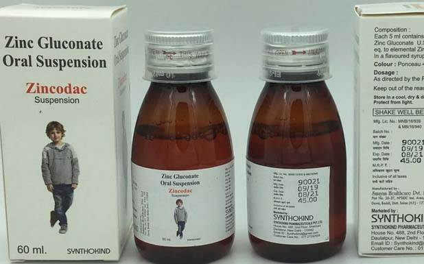

Indications:-Diarrhoea
- 
Zinc Gluconate

Zinc Gluconate Suspension
Suspension Presentation:
Each 5ml contains:
Zinc Gluconate USP or
Eq. to elemental Zinc 20 mg
Zinc gluconate is made up of two molecules of gluconic acid and zinc cation. it is the trace element required in small amount quantity. Zinc promotes the production of the antibodies and the lymphocytes in the circulation against the invading pathogen. Zinc in children is used to treat the diarrhoea related death and also prevents dehydration.

- Reduces the symptom of common cold
- Used in rehydration salts to maintain osmolality
- Reduces the episodes of diarrhoea
- Treats zinc deficiency
- Treats malnutrition

Zinc gluconate in common cold prevent adhesion and leads to the cleavage of the rhinovirus and saves the membrane from the toxin produced by the microbe.
Zinc supplementation also used to increase the immunity by interfering with the bacterial replication such as human papilloma virus.

Absorption
It is absorbed from the small intestine by the carrier mediated pathway
Protein Binding
It is about 60-70% bound to the serum albumin
Metabolism
It is metabolized in the liver
Excretion
It is excreted via urine but only few amounts of drug are excreted in the form of sweat

- Nausea
- Vomiting
- Diarrhoea
- Irritation in the mouth


Store it in room temperature and in dry place.

- Nausea
- Ciprofloxacin
- Carbamazepine
- Delafloxacin
- Cephalexin
Disclaimer:The data uploaded is made from content already available on internet.The company holds no right of it and is not responsible for any wrong information.